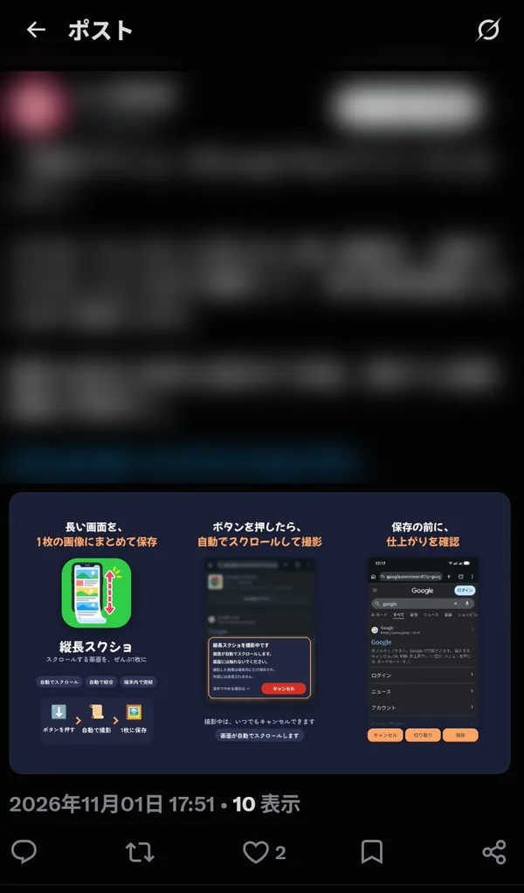
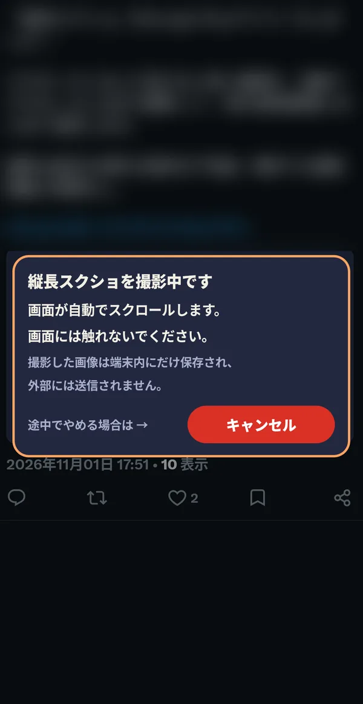
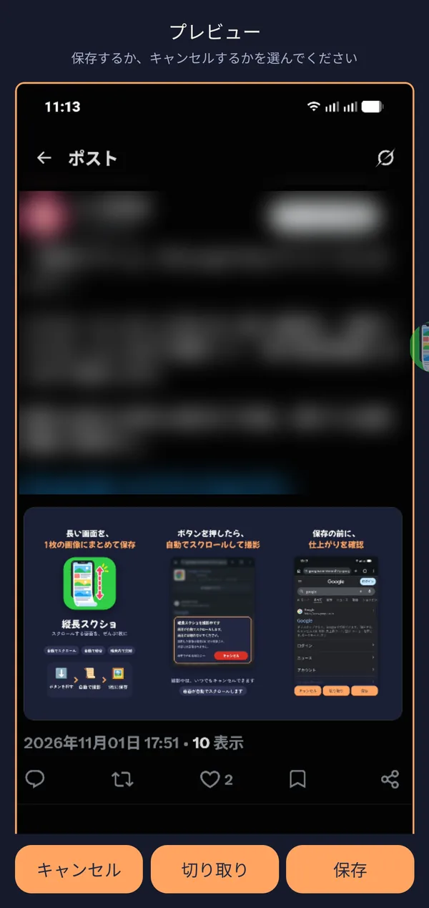
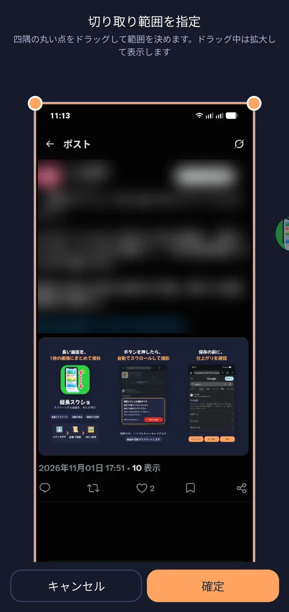

🎯 この章でできること
撮影の始め方から、プレビューでの確認、切り取り、保存までの流れを解説します。
🛠️ 詳しい操作手順
撮りたい画面でボタンを押して「撮影開始」
撮りたい画面（スクロールできるWebページ、SNS、チャット、設定画面など）を開き、フローティングボタンをタップして「撮影開始」を押します。画面が自動で上へスクロールしながら撮影され、最後まで進むと1枚の縦長の画像につなげられます。

撮影の長さに制限はなく、ページの最後まで撮影できます。
撮影中の画面と、途中でやめる方法
撮影中は、誤ってタップしてしまうのを防ぐために、画面を少し暗くしています。画面の中央には、撮影中であることを知らせるカードが表示されます。画面には触れないでください。
- 画面のちらつきについて: 撮影の瞬間だけは、画面そのものを撮るために、暗くする前の状態へ一瞬もどします。そのため画面がちらついて見えることがありますが、仕様どおりの動作で、故障ではありません。
- 途中でやめたいとき: カードの「キャンセル」を押します。キャンセルすると、そこまでに撮影できた分を結合してプレビューを表示します（まだ1回もスクロールできていないときは、取り消されます）。

プレビューで仕上がりを確認する
撮影が終わると、保存する前にプレビューが表示されます。仕上がりを確認して、下のボタンから選びます。保存かキャンセルを選ぶまで、保存はされません。
- 保存: 画像を端末に保存します。
- 切り取り: 画像の必要な範囲だけを切り取ります（次の手順）。
- キャンセル: 保存せずに破棄します。

撮影した画像を切り取る
プレビューで「切り取り」を押すと、切り取り範囲を指定する画面が開きます。
- 画像の四隅の丸い点をドラッグして、残したい範囲を決めます。ドラッグ中は拡大して表示されるので、細かい位置も合わせやすくなります。
- 「確定」を押すと、切り取った画像がプレビューに反映されます。やめるときは「キャンセル」を押します。
切り取りに失敗したときは「切り取りに失敗しました」と表示されます。もう一度お試しください。

画像を保存する・保存先
プレビューで「保存」を押すと、画像が1枚に結合されて端末の「Pictures/ScrollCapture」フォルダに保存されます。保存した画像は、フォト（ギャラリー）アプリから確認できます。
撮影した画像は端末の中にだけ保存され、外部には送信されません。
撮影できない画面・うまく撮れないとき
- 画面保護のかかった画面: Androidのセキュリティ設定（画面保護）により、撮影できない画面があります。あらかじめご了承ください。
- スクロールできない画面: ホーム画面のようにスクロールして撮影できない画面では、「この画面はスクロールして撮影できません」と表示されます。
- 撮影の途中で別の画面に切り替わったとき: スクロールではなく別の画面に切り替わったと判断したときは、つながらない画像にならないよう、そこで撮影を止めます。
❓ 撮影についてのよくある質問
Q 撮影中に画面が一瞬ちらつきます。故障ですか？
いいえ、仕様どおりの動作です。撮影の瞬間だけ、画面そのものを撮るために、暗くする前の状態へ一瞬もどしているためです。
Q 撮影の長さに上限はありますか？
いいえ。ページの最後まで撮影できます。
Q 保存する前にやり直したいです。
プレビューで「キャンセル」を押すと保存せずに破棄されます。もう一度、撮りたい画面で「撮影開始」を押してください。
Q 撮影した画像を他の人に共有していますか？
いいえ。撮影した画像は端末の「Pictures/ScrollCapture」にだけ保存され、外部へ送信されることはありません。